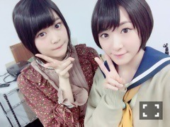

| 2016/06 03 Fri | 久しぶりに自分の声聴いても嫌な気持ちにならなかった。 |
生駒ですっ！！
日々バタバタと過ぎていきます、
そんな中大切な事に触れるの遅れちゃったよう
乃木坂46のセカンドアルバム
それぞれの椅子
発売になりましたね

手にとって下さる方が沢山いらっしゃって有難いです！
まだ、私は特典映像見れてないから握手会でファンのみなさんがせっかく話してくれたと言うのにまだわからず

すみませんね。。。。・゜・(ノД`)・゜・。
しかし、歌は沢山聴いています。
ウォークマンに入れてるのもそうだけど、
携帯でダウンロードしちゃいまする。
便利な世の中だこと。(^-^)
環状六号線
まりかとさゆとのユニット
私あんまりユニットに参加しないから最初びっくりしたなぁ、
しかも歌上手くないし(^-^)汗
でも、この曲はいつもの私のイメージからはあまり出てこない爽やかさに溢れたメロディで、
いつかこの特徴的なのに長所がない声をなんとか訓練して聴こえを良く出来ないかと実は自分なりにやっていたので、
歌い方も随分変えたよ！
声の出し方も！
お陰で絶対生駒ちゃんの声じゃないと言われたよ！！
嬉しんだか何だかよくわからんが、
それだけ聴いた方が反応して下さったという事だよね？

これからは、ちゃんと声も訓練しないとなぁ
ギガちゃんをやらせて頂けた事が1番の自信に繋がりましたがね
ギガちゃん、もう声あてられないのかなぁ。。
もう少しやりたいなぁ。。。
ふとね、15枚目の個別握手会のお知らせみてね
部数と時間が変わったのかと。
これはどういう変わり方なのかなぁ
いこまふぁむの皆様は、嬉しいって思うのかなぁ
私は正直アイドルらしい対応出来なくて、
それは、直接みなさんと会える握手会
ありがとうを伝えたくて。
丁寧に言葉を返したくて。
だから、そんなギャップがあって
私は充分にみなさんが楽しめる握手会に出来るのかと不安です。
でも、感謝の気持ちはたくさんありますからっ！！
どうぞよろしくお願い致します！！


全然写真に写ってないけど、
最近髪の毛ウェットにするの大好きなんだけど、
ウェットにしたらオールバックにするのハマっているんだ(^-^)⭐️
だから、普通に事務的なお仕事の日は
オールバックヽ(・∀・)ノヽ(・∀・)ノ
前髪が目にかからないっ！
ウェット！！
ちょっとモード系の服着たらさらにテンション上がるっ！！
ウェットにするワックスをこれでもかと買ってまする笑
また稽古したいなぁ
ガンちゃーん！
あっ！
あと公開になってましたねっヽ(・∀・)ノヽ(・∀・)ノヽ(・∀・)ノ
コープスパーティーBook of Shadows
の予告動画っ！！
観られた方いるかなっ？
そこで発表になりました、
欅坂46の石森虹花ちゃんが篠崎ひのえ役で出演します〜！！
やっと？
もう？
同じ坂道シリーズが同じ作品に出演出来ました！
有難い事ですっ！！
早く言いたくてうじうじしていたのだよ(^-^)

と言う事で〜
虹花ちゃんとのツーショット！
どうぞ、欅坂46のファンの皆様も公開楽しみにしていて下さいねっ！
もちろん！
乃木坂46のファンの皆様も

いこのんっ

大好きすぎるのんちゃんっっっ
ほんとに、もやもやな心模様になっても
一気に晴らしてくれる存在っ！！
今回のBook of Shadowsでは、
いこのんのシーンが沢山あるよっ！
お楽しみに〜

ではっ！
へばなっ☆彡
コメント(563)
2016/06/03 08:48